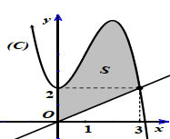
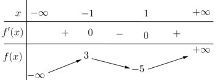
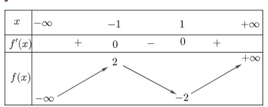
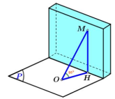
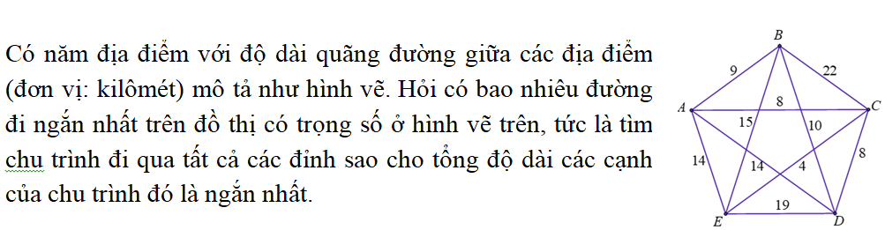
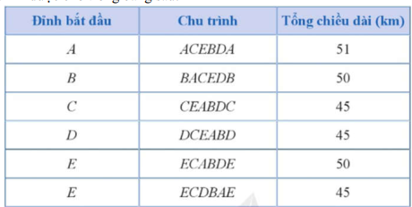
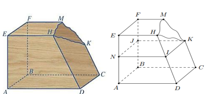

Nguyên hàm của hàm \( f(x) \) là hàm \( F(x) \) sao cho \( F'(x) = f(x) \). Nguyên hàm của \( \cos x \) là \( \sin x + C \).
Nguyên hàm của hàm số \( f(x) = \cos x \) là
Chọn đáp án:
Lời giải:
Nguyên hàm của \( f(x) = \cos x \) là \( \int \cos x \, dx = \sin x + C \).
Đáp án: C.
Diện tích hình phẳng giới hạn bởi đồ thị \( y = f(x) \), trục hoành, và các đường \( x = a \), \( x = b \) là \( \int_a^b |f(x)| \, dx \).
Cho hàm số \( f(x) = -x^3 + 3x^2 + 2 \) có đồ thị \((C)\) như hình vẽ. Tính diện tích \( S \) của hình phẳng được tô đen như trong hình.

Chọn đáp án:
Khoảng biến thiên \( R \) của mẫu số liệu ghép nhóm là hiệu giữa giá trị lớn nhất và nhỏ nhất của các khoảng: \( R = x_{\text{max}} - x_{\text{min}} \).
Anh An thống kê lại đường kính thân gỗ của một số cây xoan đảo 6 năm tuổi được trồng ở một lâm trường ở bảng sau:
\[
\begin{array}{|c|c|c|c|c|c|}
\hline
\text{Đường kính (cm)} & [40; 45) & [45; 50) & [50; 55) & [55; 60) & [60; 65) \\
\hline
\text{Tần số} & 5 & 20 & 18 & 7 & 3 \\
\hline
\end{array}
\]
Hãy tìm khoảng biến thiên của mẫu số liệu ghép nhóm trên.
Chọn đáp án:
Phương trình mặt phẳng qua ba điểm \( A(x_1; y_1; z_1) \), \( B(x_2; y_2; z_2) \), \( C(x_3; y_3; z_3) \) có dạng \( \frac{x}{a} + \frac{y}{b} + \frac{z}{c} = 1 \), với \( a, b, c \) được xác định bằng cách thay tọa độ các điểm.
Trong không gian \( Oxyz \), cho ba điểm \( A(3; 0; 0) \), \( B(0; 2; 0) \) và \( C(0; 0; 1) \). Mặt phẳng \( (ABC) \) có phương trình là:
Chọn đáp án:
Giá trị cực đại của hàm số xảy ra tại điểm mà \( f'(x) \) đổi dấu từ dương sang âm, xác định qua bảng biến thiên.
Cho hàm số \( y = f(x) \) có bảng biến thiên như sau:

Giá trị cực đại của hàm số đã cho bằng
Chọn đáp án:
Phương trình \( \log_b a = c \) có nghiệm \( a = b^c \), với điều kiện \( a > 0 \), \( b > 0 \), \( b \neq 1 \).
Nghiệm của phương trình \( \log_3(x - 2) = 1 \) là:
Chọn đáp án:
Lời giải:
\( \log_3(x - 2) = 1 \Rightarrow x - 2 = 3^1 = 3 \Rightarrow x = 5 \).
Đáp án: D.
Mặt phẳng có phương trình \( ax + by + cz + d = 0 \) có vector pháp tuyến là \( (a; b; c) \).
Trong không gian \( Oxyz \), mặt phẳng nào dưới đây nhận \( \vec{n} = (3; 1; -7) \) là một vector pháp tuyến?
Chọn đáp án:
Lời giải:
Mặt phẳng có vector pháp tuyến \( \vec{n} = (3; 1; -7) \) phải có phương trình dạng \( 3x + y - 7z + d = 0 \). Trong các lựa chọn, chỉ \( 3x + y - 7z - 3 = 0 \) thỏa mãn.
Đáp án: C.
Góc nhị diện giữa hai mặt phẳng được xác định qua góc giữa các cạnh hoặc sử dụng công thức hình học không gian.
Cho hình chóp \( S.ABC \) có đáy \( ABC \) là tam giác vuông cân tại \( A \) và \( AB = a\sqrt{2} \). Biết \( SA \perp (ABC) \) và \( SA = a \). Góc nhị diện \( [S, BC, A] \) có số đo bằng:
Chọn đáp án:
Lời giải:
Đáy \( ABC \) vuông cân tại \( A \), \( AB = AC = a\sqrt{2} \Rightarrow BC = a\sqrt{2} \). \( SA \perp (ABC) \), \( SA = a \). Góc nhị diện \( [S, BC, A] \) là góc giữa \( SA \) và \( BC \). Trong tam giác \( SAB \) vuông tại \( A \), \( \tan \angle SAB = \frac{AB}{SA} = \frac{a\sqrt{2}}{a} = \sqrt{2} \Rightarrow \angle SAB = 45^\circ \).
Đáp án: C.
Bất phương trình \( a^x > 1 \) với \( a > 1 \) có nghiệm \( x > 0 \).
Tập nghiệm của bất phương trình \( 2025^x > 1 \) là:
Chọn đáp án:
Cấp số cộng có công thức: \( u_n = u_1 + (n-1)d \). Công sai \( d \) được xác định từ hai số hạng.
Cho dãy cấp số cộng \( (u_n) \) có \( u_1 = 2 \), \( u_3 = 8 \). Tìm công sai \( d \).
Chọn đáp án:
Lời giải:
Trong cấp số cộng, \( u_n = u_1 + (n-1)d \). Với \( u_1 = 2 \), \( u_3 = 8 \), ta có \( u_3 = u_1 + 2d \Rightarrow 8 = 2 + 2d \Rightarrow 2d = 6 \Rightarrow d = 3 \).
Đáp án: A.
Trung điểm \( I \) của đoạn thẳng \( AB \) có tọa độ: \( I\left( \frac{x_A + x_B}{2}; \frac{y_A + y_B}{2}; \frac{z_A + z_B}{2} \right) \).
Cho hai điểm \( A(-3; 2; -1) \), \( B(-1; 0; 5) \). Tọa độ trung điểm \( I \) của đoạn thẳng \( AB \) là
Chọn đáp án:
Lời giải:
Trung điểm \( I \) của \( AB \): \( I\left( \frac{-3 + (-1)}{2}; \frac{2 + 0}{2}; \frac{-1 + 5}{2} \right) = I(-2; 1; 2) \).
Đáp án: A.
Giá trị nhỏ nhất trên đoạn \( [a; b] \) là giá trị nhỏ nhất của \( f(x) \) tại các điểm cực tiểu hoặc tại \( x = a \), \( x = b \).
Cho hàm số \( y = f(x) \) có bảng biến thiên như hình vẽ. Giá trị nhỏ nhất của hàm số \( y = f(x) \) trên \( [-1; 1] \) bằng:

Chọn đáp án:
Hàm \( \tan x \) có chu kỳ \( \pi \), hàm \( \tan kx \) có chu kỳ \( \frac{\pi}{k} \). Giá trị \( \tan x = a \) có nghiệm \( x = \arctan a + k\pi \).
Cho hàm số \( f(x) = \tan 2x \). Khi đó:
Chọn đáp án cho từng phát biểu:
a)
b)
c)
d)
Quãng đường được tính bằng tích phân vận tốc: \( S = \int_a^b v(t) \, dt \). Vận tốc là đạo hàm của quãng đường, gia tốc là đạo hàm của vận tốc.
Một chất điểm \( A \) xuất phát từ \( O \), chuyển động thẳng với vận tốc biến thiên theo thời gian bởi quy luật \( v(t) = \frac{1}{150}t^2 + \frac{59}{75}t \, (\text{m/s}) \), trong đó \( t \) (giây) là khoảng thời gian tính từ lúc \( A \) bắt đầu chuyển động. Từ trạng thái nghỉ, một chất điểm \( B \) cũng xuất phát từ \( O \), chuyển động thẳng cùng hướng với \( A \) nhưng chậm hơn 3 giây so với \( A \) và có gia tốc bằng \( a \, (\text{m/s}^2) \) (\( a \) là hằng số). Sau khi \( B \) xuất phát được 12 giây thì đuổi kịp \( A \). Xét tính đúng sai của các mệnh đề sau:
Chọn đáp án cho từng phát biểu:
a)
b)
c)
d)
Xác suất biến cố \( A \): \( P(A) = \frac{\text{số kết quả thuận lợi}}{\text{tổng số kết quả}} \). Với các biến cố độc lập, \( P(A \cap B) = P(A) \cdot P(B) \).
Trên một tấm quảng cáo, người ta mắc hai hệ thống bóng đèn. Hệ thống I gồm 2 bóng mắc nối tiếp, hệ thống II gồm 2 bóng mắc song song. Khả năng bị hỏng của mỗi bóng đèn sau 6 giờ thắp sáng liên tục là 0,15. Biết trạng thái của mỗi bóng đèn là độc lập. Khi đó xác suất để:
Chọn đáp án cho từng phát biểu:
a)
b)
c)
d)
Khoảng cách trong không gian: \( \sqrt{(x_2 - x_1)^2 + (y_2 - y_1)^2 + (z_2 - z_1)^2} \). Góc giữa hai vector được tính qua tích vô hướng: \( \cos \theta = \frac{\vec{u} \cdot \vec{v}}{|\vec{u}| |\vec{v}|} \).
Một tháp trung tâm kiểm soát không lưu ở sân bay cao \( 100 \, \text{m} \) sử dụng radar có phạm vi theo dõi \( 240 \, \text{km} \) được đặt trên đỉnh tháp. Chọn hệ trục tọa độ \( Oxyz \) có gốc tọa độ \( O \) trùng với vị trí chân tháp, mặt phẳng \( (Oxy) \) trùng với mặt đất sao cho trục \( Ox \) hướng về phía tây, trục \( Oy \) hướng về phía nam, trục \( Oz \) hướng thẳng đứng và điểm \( B(26; 20; 24) \) trong không trung (đơn vị mỗi trục là km). Một máy bay cất cánh tại vị trí \( A \) trên mặt đất cách \( 36 \, \text{km} \) về phía đông và cách \( 30 \, \text{km} \) về phía nam so với tháp trung tâm kiểm soát không lưu. Biết rằng máy bay chuyển động thẳng đều với vận tốc là \( 220 \, \text{km/h} \). Các phát biểu sau đây đúng hay sai? (kết quả làm tròn đến hàng phần mười)
Chọn đáp án cho từng phát biểu:
a)
b)
c)
d)
Trong tam giác vuông, cạnh đối \( = \) cạnh huyền \( \cdot \sin \theta \). Khoảng cách từ điểm đến mặt đất được tính bằng hàm sin.
Hình dưới minh họa hình ảnh một chiếc gậy dài \( 3 \, \text{m} \) dựa vào tường, góc nghiêng giữa chiếc gậy và mặt đất là \( 65^\circ \). Đầu trên của chiếc gậy đặt vào vị trí \( M \) của tường. Khoảng cách từ vị trí \( M \) đến mặt đất (làm tròn đến hàng phần mười) là:

Nhập đáp án:
Lời giải:
Trong tam giác \( OMH \) vuông tại \( H \), \( HM = OM \cdot \sin \angle MOH = 3 \cdot \sin 65^\circ \approx 3 \cdot 0.9063 \approx 2.719 \). Làm tròn đến hàng phần mười: \( 2.7 \, \text{m} \).
Đáp án: 2.7.
Số chu trình ngắn nhất được xác định bằng cách đếm các chu trình có tổng chiều dài nhỏ nhất trong bảng.

Nhập đáp án:
Lời giải:

Phương trình tham số đường thẳng: \( x = x_0 + at \), \( y = y_0 + bt \), \( z = z_0 + ct \). Khoảng cách giữa hai điểm được tính bằng công thức Euclid.
Trong không gian \( Oxyz \) (đơn vị trên mỗi trục là mét), một ngọn hải đăng được đặt ở vị trí \( I(21; 35; 50) \), biết bán kính phủ sóng của ngọn đèn là \( 4 \, \text{km} \). Giả sử người đi biển di chuyển theo đường thẳng từ vị trí \( I(21; 35; 50) \) đến vị trí \( A(5121; 658; 0) \). Tìm cao độ của vị trí cuối cùng trên đoạn thẳng \( IA \) sao cho người đi biển còn có thể nhìn thấy được ánh sáng từ ngọn hải đăng (các kết quả làm tròn đến hàng phần trăm).
Nhập đáp án:
Lời giải:
Đường thẳng \( IA \): \( x = 21 + 5100t \), \( y = 35 + 623t \), \( z = 50 - 50t \). Điểm \( H \) thỏa \( IH = 4 \, \text{km} = 4000 \, \text{m} \): \( \sqrt{(5100t)^2 + (623t)^2 + (-50t)^2} = 4000 \Rightarrow \sqrt{26010000t^2 + 388129t^2 + 2500t^2} = 4000 \Rightarrow t \approx \pm 0.78 \). Với \( t \approx 0.78 \), \( H(3900; 520.94; 11) \). Cao độ: \( 11 \, \text{m} \).
Đáp án: 11.
Lợi nhuận \( P(x) = R(x) - C(x) \), với \( R(x) \) là doanh thu, \( C(x) \) là chi phí. Tìm giá trị \( x \) cực đại hóa \( P(x) \) bằng đạo hàm.
Năm 2024, một nhà máy sản xuất trung bình bán được \( 1000 \) tivi màn hình phẳng mỗi tuần với giá \( 14 \) triệu đồng một chiếc. Một cuộc khảo sát thị trường chỉ ra rằng nếu cứ giảm giá bán \( 500 \) nghìn đồng, số lượng tivi bán ra sẽ tăng thêm khoảng \( 100 \) tivi mỗi tuần. Nếu hàm chi phí hàng tuần \( C(x) = 2x - 16000 \) (triệu đồng), trong đó \( x \) là số tivi bán ra trong tuần, nhà sản xuất nên đặt giá bán như thế nào để lợi nhuận là lớn nhất (đơn vị triệu đồng, làm tròn đến hàng phần chục)?
Nhập đáp án:
Lời giải:
Giá \( T = -\frac{1}{200}x + 19 \). Doanh thu \( R(x) = x \cdot \left(-\frac{1}{200}x + 19\right) = -\frac{1}{200}x^2 + 19x \). Lợi nhuận \( P(x) = R(x) - C(x) = -\frac{1}{200}x^2 + 17x + 16000 \). Đạo hàm \( P'(x) = -\frac{1}{100}x + 17 = 0 \Rightarrow x = 1700 \). Giá \( T = -\frac{1}{200} \cdot 1700 + 19 = 10.5 \) triệu đồng.
Đáp án: 10.5.
Trong không gian, các mặt phẳng song song giữ tỷ lệ khoảng cách không đổi. Tỷ lệ đoạn thẳng được tính dựa trên tính chất song song.
Một khối gỗ có các mặt đều là một phần của mặt phẳng với \( (ABCD) \parallel (EFMH) \), \( CK \parallel DH \). Khối gỗ bị hỏng một góc (hình bên). Bác thợ mộc muốn làm đẹp khối gỗ bằng cách cắt khối gỗ theo mặt phẳng \( (R) \) đi qua \( K \) và song song với mặt phẳng \( (ABCD) \). Gọi \( I, J \) lần lượt là giao điểm \( DH \), \( BF \) với mặt phẳng \( (R) \). Biết \( BF = 60 \, \text{cm} \), \( DH = 75 \, \text{cm} \), \( CK = 40 \, \text{cm} \). Bác thợ mộc cần cắt đoạn \( FJ \) bằng bao nhiêu (cm) để được khối gỗ như mong muốn ban đầu.

Nhập đáp án:
Lời giải:
\( (R) \) song song \( (ABCD) \), đi qua \( K \). \( DI = CK = 40 \, \text{cm} \), \( IH = DH - DI = 75 - 40 = 35 \, \text{cm} \). Tỷ lệ \( \frac{IH}{DH} = \frac{35}{75} = \frac{7}{15} \). Do \( (R) \) song song \( (ABCD) \), \( \frac{IH}{DH} = \frac{FJ}{BF} = \frac{7}{15} \). Với \( BF = 60 \, \text{cm} \), \( FJ = \frac{7}{15} \cdot 60 = 28 \, \text{cm} \).
Đáp án: 28.
Xác suất biến cố \( A \cup B \) (chỉ một trong hai xảy ra): \( P((\bar{A} \cap B) \cup (A \cap \bar{B})) = P(\bar{A}) \cdot P(B) + P(A) \cdot P(\bar{B}) \).
Để nghiên cứu xác suất của một loại cây trồng mới phát triển bình thường, người ta trồng hạt giống của loại cây đó trên hai ô đất thí nghiệm \( A, B \) khác nhau. Xác suất phát triển bình thường của hạt giống đó trên các ô đất \( A, B \) lần lượt là \( 0.61 \) và \( 0.7 \). Lặp lại thí nghiệm trên với đầy đủ các điều kiện tương đương. Xác suất của biến cố hạt giống chỉ phát triển bình thường trên một ô đất là bao nhiêu (làm tròn kết quả đến hàng phần trăm)?
Nhập đáp án:
Lời giải:
Gọi \( A \): cây phát triển bình thường trên ô \( A \), \( B \): trên ô \( B \). \( P(A) = 0.61 \), \( P(B) = 0.7 \), \( P(\bar{A}) = 0.39 \), \( P(\bar{B}) = 0.3 \). Xác suất chỉ phát triển trên một ô: \( P((\bar{A} \cap B) \cup (A \cap \bar{B})) = P(\bar{A}) \cdot P(B) + P(A) \cdot P(\bar{B}) = 0.39 \cdot 0.7 + 0.61 \cdot 0.3 = 0.273 + 0.183 = 0.456 \approx 0.46 \).
Đáp án: 0.46.